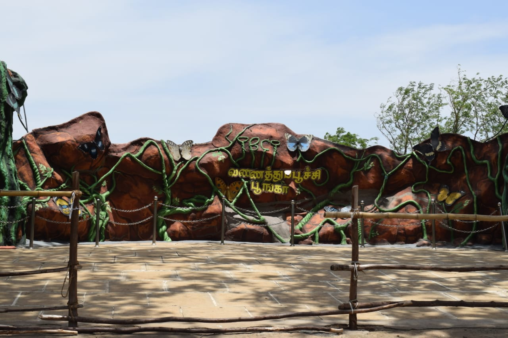
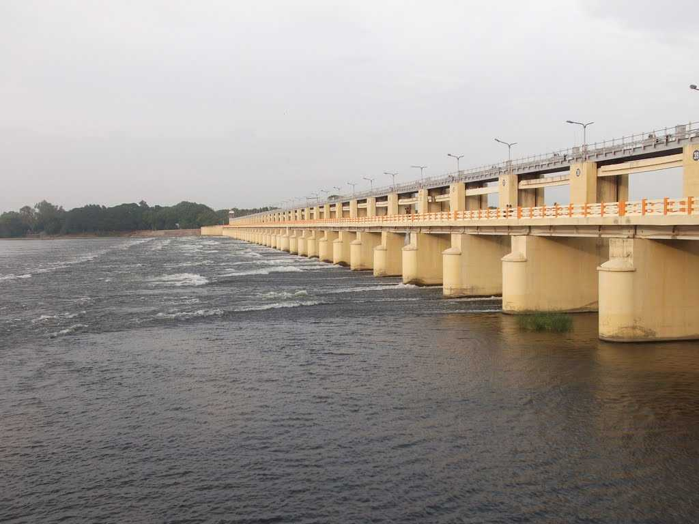
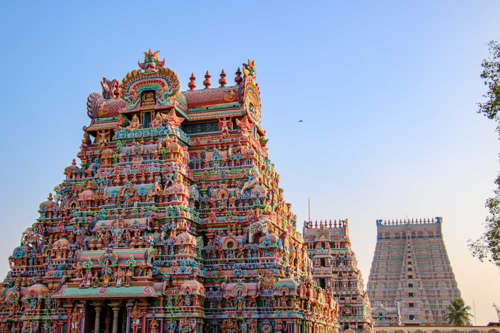
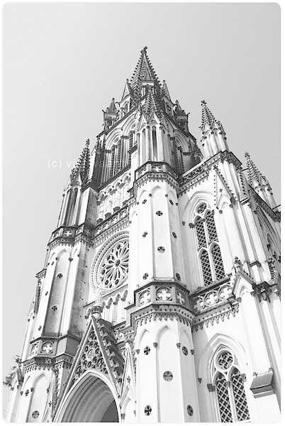
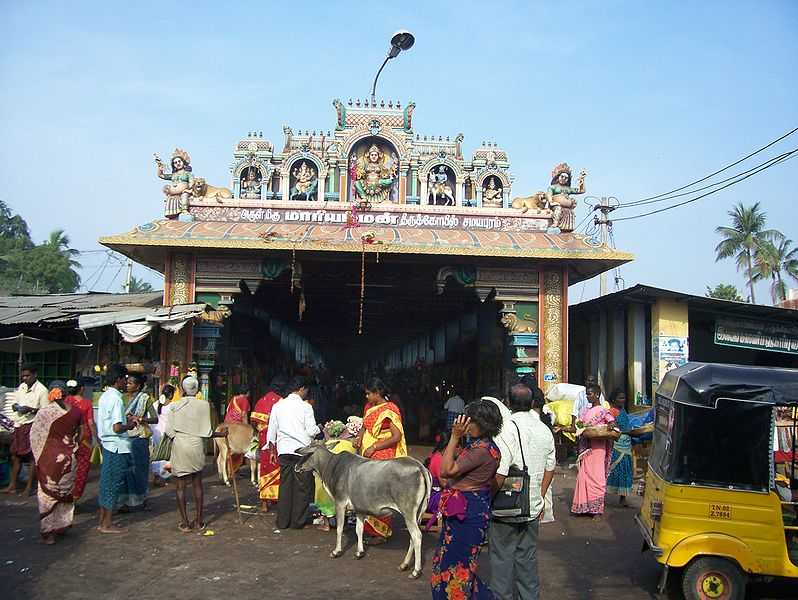
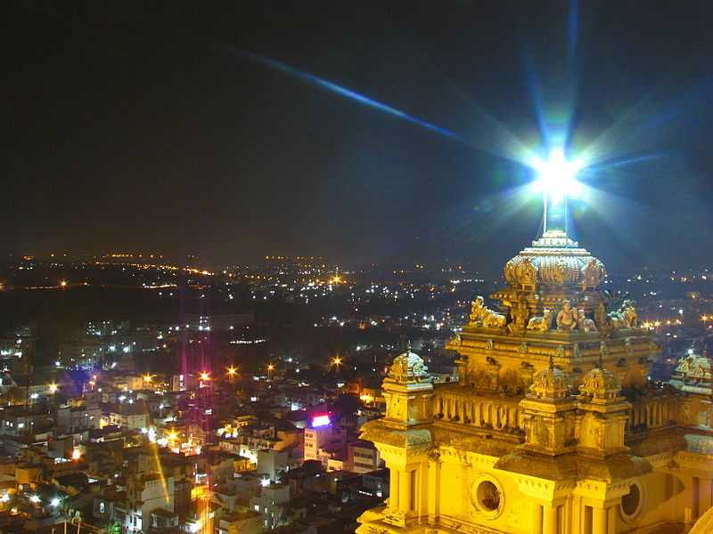

 4.9k
4.9k
BUTTERFLY PARK
Butterfly Park is butterfly conservatory located in Srirangam Town in Trichy District of Tamilnadu. The butterfly park is in a serene location between the banks of rivers Cauvery and Kollidam near Srirangam. This Park is considered as one of the biggest butterfly parks in Asia. The park spreads over 35 acres and built at a cost of approximately 8 crores. It is exactly situated near river bank of Cauvery near Melur, Srirangam. There is no public or private transport available after Melur.
5 Days

4.9k
MUKKOMBU
In addition to beautiful temples, Trichy also has something for your children. Mukkombu is a picnic spot located at a distance of about 18 km from the city.Mukkombu has its own amusement park, Gardens and fishing areas, to keep your entire family entertained. The upper dam constructed across the river of Kaveri can also be visited and is equally majestic. boating and fishing facilities are also available at the dam.
6 Days

4.8k
SRI RANGANATHASWAMY TEMPLE
Sri Ranganathaswamy Temple is situated in Srirangam Town of Trichy. The temple is devoted to Lord Ranganatha, a reclining form of Lord Vishnu. The temple complex along with the surrounding area covers a total area of 156 acres.It has been constructed in Dravidian style of architecture The temple is the largest functional temple in the world. The outstanding architecture of the temple includes 21 surrounding 'gopurams' along with an ornate gateway, which is also the tallest 'gopuram' of India.
3 Days

4.8k
ST. JOSEPH'S CHURCH
Built in 1792, the St. Joseph's Church is one of the most beautiful churches in all South India. It is also one of the oldest Churches of India. It was built by Schwartz.The church was built during the time of mass conversions to Christianity, as initiated by the British under their rule in India. It is situated near the Teppakulam, in the centre of the town. The church is located close to the famous Maingaurd Gate, which has been a part of many historical events associated with the colonial rule.
7 Days

4.7k
SAMAYAPURAM AMMAN TEMPLE
The beautiful temple is located at about 20 km from the main city of Trichy. The Goddess worshipped here, Goddess Mariamman is believed to be the goddess of power.Mariamman is also believed to bring health and prosperity to its devotees. A strong belief is that this deity cures small pox as well as chicken pox. This temple has individual shrines for processional images of Mariamman and moolavar.The place is especially known for the annual festival of Thai Poosam, which is celebrated with a lot of fanfare.
5 Days

4.8k
ROCKDORT TEMPLE
By far the most popular place in all of Trichy is the Rockfort Ganpathi Temple. It derives its name from it's unique building style. The temple structure comprises a huge rock, which is believed to be the oldest rock in the world, even older than The Himalayan Mountains.After climbing 344 steps, the devotees reach the main temple area. The temple has two sub parts- the Thayumanaswamy, which is dedicated to Lord Shiva and the Pillayar, which is dedicated to Lord Ganesha. The origins of the temple are traced back to the 7th century. The Shiva temple contains the Lingam form of the Lord.
2 Days